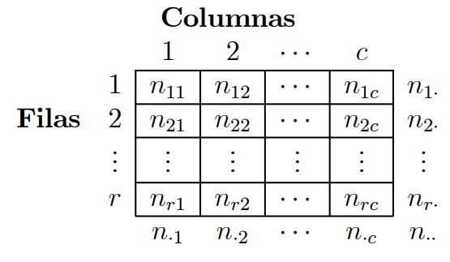
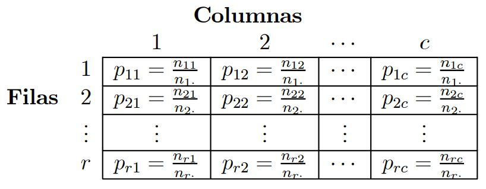
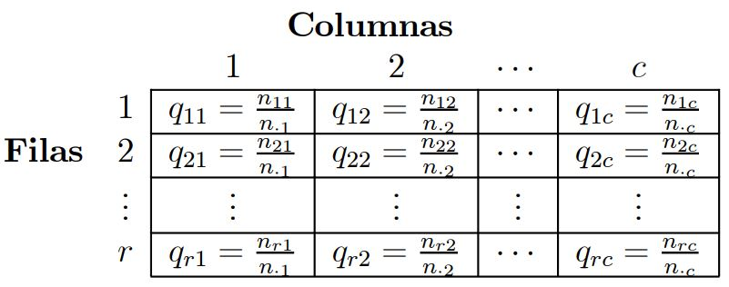

Created by Diego Manzur
El análisis de correspondencias es una técnica descriptiva para representar tablas de contingencia. Los datos de partida para el análisis de correspondencias es una matriz X de dimensiones n × k que representa las frecuencias absolutas observadas en una tabla de contingencia de dos variables, donde la primera se representa por filas y tiene n categorías y la segunda por columnas y tiene k categorías.
Por ejemplo, clasificamos un conjunto de estudiantes en n posibles procedencias geográficas y k posibles opiniones respecto a la docencia. En general, el elemento xij de la matriz X representa la frecuencia absoluta observada en la casilla (i, j) de la tabla de contingencia.
Ejemplo: supongamos 400 tiendas de discos repartidas entre los países de la U.E. Se clasifica a los compradores en 3 categorías distintas: Jóvenes, Edad Media, Mayores, y a los tipos de música en 5 tipos:
Tabla Estandarizada por Columnas vs por Filas
Si el hecho de que aparezca o se presente una categoría junto con otra no es ni más ni menos probable de que se presenten las dos categorías por separado, se dice que las variables son independientes y, en general, se dice que la tabla es homogénea. Así, dadas dos variables aleatorias X e Y , son independientes si
$$P(X=x_i , Y=y_j) = P(X=x_i)*P(Y=y_j)$$ para todo i, j.
En el caso de una tabla de contingencia
$$p_{ij} = \dfrac{n_{ij}}{n_{..}} \textrm{ por un lado, } p_{i.} = \dfrac{n_{i.}}{n_{..}} \textrm{ y } p_{.j} = \dfrac{n_{.j}}{n_{..}}$$
$$\textrm{Así, si } P(X=x_i , Y=y_j) = P(X=x_i)*P(Y=y_j) = p_{ij} = p_{i.} * p_{.j}$$
para todo i, j, las variables X e Y son independientes y la tabla es homogénea.
Es necesario definir un contraste o test que me mida las distancias entre lo que uno observa y lo que esperaría si se cumple la hipótesis nula de independencia. La forma tradicional de hacerlo es mediante un contraste de la chi cuadrado, en el que se define el estadístico como
$$ \chi^{2} = \sum_{i=1}^{r} \sum_{j=1}^{c} \dfrac{{(n_{ij}-\dfrac{n_{i.}*n_{.j}}{n_{..}})}^{2}}{ \dfrac{n_{i.}*n_{.j}}{n_{..}} }$$
 
$$ dist_{ij}^{col} = \sum_{k=1}^{r} \dfrac{(p_{ki}-p_{kj})^2}{p_k} \textrm{ y a su vez } dist_{ij}^{fila} = \sum_{k=1}^{c} \dfrac{(q_{ki}-q_{kj})^2}{q_k}$$
$$ p_k = \dfrac{n_{k.}}{n_{..}} \textrm{ y también } q_k = \dfrac{n_{.k}}{n_{..}}$$